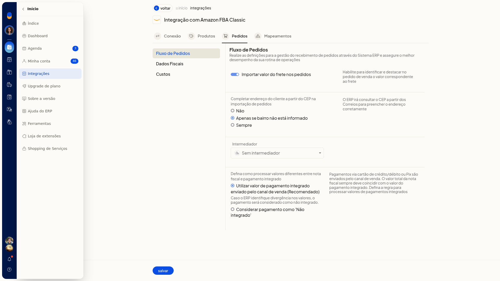
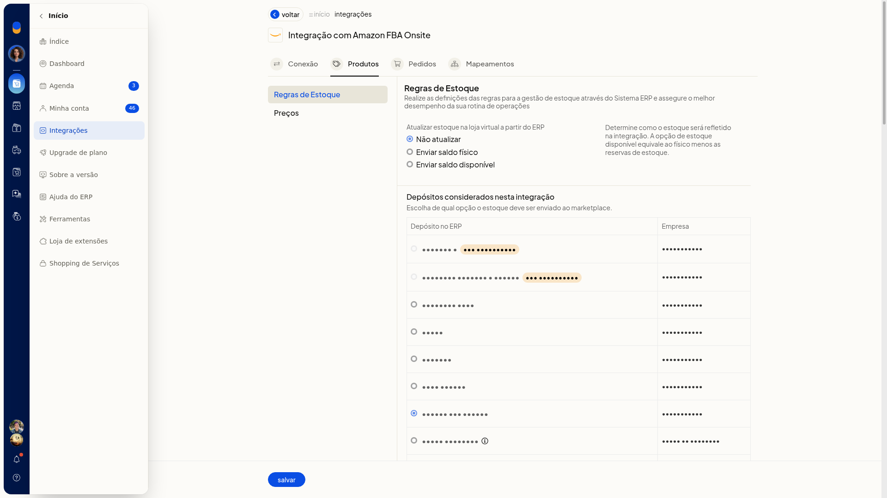

Amazon FBA (Classic, Onsite e envios inbound)
A Amazon FBA Classic e a Amazon FBA Onsite são canais da integração Amazon no ERP da Olist. Com eles, você configura estoque, preços, fluxo de pedidos, dados fiscais, custos e formas de recebimento da operação FBA.
Os dois canais ficam em Início > Integrações. Com o canal instalado, abra gerenciar no card. As abas são Conexão, Produtos, Pedidos e Mapeamentos. Nessas abas não há item de envio inbound.
Pré-requisitos
- O canal Amazon FBA Classic ou Amazon FBA Onsite precisa estar instalado para você abrir gerenciar.
Importante
- Não há opção de envio inbound nem de título de anúncio com IA nos submenus da Amazon FBA Classic e da Amazon FBA Onsite.
- Só é possível relacionar formas de recebimento depois de habilitar Importar forma de recebimento nos pedidos.
- O menu do card inclui Inativar integração, Excluir todos os anúncios no ERP e Excluir integração. Não escolha essas opções se a intenção for apenas configurar.
- Excluir todos os anúncios no ERP só aparece para o administrador da conta, e somente quando esse recurso foi liberado para a empresa.
Instruções
Instalar o canal
- Acesse Início > Integrações.
- Adicione uma integração e localize no catálogo Amazon FBA Classic ou Amazon FBA Onsite.
- Inicie a instalação do canal desejado.
- Em Conexão, informe Nome da integração no ERP, se quiser identificar a integração, e conclua a autenticação com a Amazon. O nome não é obrigatório. O canal instalado passa a aparecer em Minhas Integrações com gerenciar.
Amazon FBA Classic
- Acesse Início > Integrações.
- No card Amazon FBA Classic, clique em gerenciar.
- Use as abas Conexão, Produtos, Pedidos e Mapeamentos. Não há aba Outros.
- Em Produtos, abra Regras de Estoque ou Preços. O submenu traz só esses dois itens.
- Em Preços, escolha Preço fixo, Conforme lista de preços ou Conforme regras de preço.
- Lista não é obrigatório. Se usar lista de preços, selecione a lista do ERP.
- Em Conforme regras de preço, percentual não é obrigatório. Informe número com vírgula e duas casas decimais. A base disponível é Base simples.
- Na regra por faixa de peso, preencha Valor fixo, adicional, De, Até e frete. Nenhum desses campos é obrigatório. Valor fixo, adicional e frete são valores em reais. De é o peso inicial e Até o peso final da faixa, em kg. Para gravar a faixa, clique em Salvar no diálogo.
-
Em Pedidos, abra Fluxo de Pedidos, Dados Fiscais ou Custos. Não há item de envio inbound.

-
Em Mapeamentos, abra Formas de Recebimento. É o único item desse submenu. Para relacionar uma forma, habilite Importar forma de recebimento nos pedidos.
Amazon FBA Onsite
-
Acesse Início > Integrações.
-
No card Amazon FBA Onsite já instalada, clique em gerenciar.
-
Use as abas Conexão, Produtos, Pedidos e Mapeamentos. Não há aba Outros.
-
Em Produtos, abra Regras de Estoque ou Preços. O submenu traz só esses dois itens.

-
Em Pedidos, abra Fluxo de Pedidos, Dados Fiscais ou Custos. Não há item de envio inbound.

-
Em Mapeamentos, abra Formas de Recebimento. Com Importar forma de recebimento nos pedidos desligado, a tela mostra Você não possui formas de recebimento relacionadas, pede para habilitar a opção acima e oferece habilitar importação e o link vídeo explicativo. Clique em habilitar importação para passar a relacionar as formas. O mapeamento só é preenchido depois dessa habilitação.

Resultado
Com o canal instalado, gerenciar abre Conexão, Produtos, Pedidos e Mapeamentos. Na Amazon FBA Onsite, Formas de Recebimento permanece com a mensagem de que não há formas relacionadas até você habilitar a importação.
Informações adicionais
Envios inbound não aparecem nestes canais
A Amazon FBA Classic e a Amazon FBA Onsite não trazem item de envio inbound em Produtos, Pedidos ou Mapeamentos.
Os submenus são mais curtos que os da Amazon ERP
- Em Produtos, só há Regras de Estoque e Preços.
- Em Pedidos, só há Fluxo de Pedidos, Dados Fiscais e Custos.
- Em Mapeamentos, só há Formas de Recebimento.